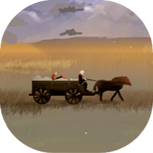

Make sure you're playing Project Gorgon. If not, you're missing out and also this tool will be marginally less useful.
Surveying can be a lot of work, plus you want to get the bonuses for rapidly finding surveys. Some players organize them into quadrants or sort them in their inventory to make the run easier. This tool is a little different. It helps you make a map of the surveys in the order they are currently in your inventory.
Nope. We asked. (This tool started out as a piece of plastic taped to the monitor and a red dry-erase monitor, before it gradually metastasized into javascript.)
Surveys are logged to chat logs. Load them into this tool to find the locations of your surveys and see them on a map.
Under the Settings menu, in the "Special" section, add "LogChat" to your special settings. There are instructions there.
You'll need to find your chat logs to load them into this tool. On Windows, that's a place like %APPDATA%\..\LocalLow\Elder Game\Project Gorgon\ChatLogs
Head over to the Map tab to get started!
This arguably helpful tool is brought to you by one or more of the pathologically helpful folks in the Rowen Trading Guild and maybe also the Church of Ormorek, Reconstituted.
This tool does not upload any data to the internet. It runs entirely in your web browser. Spying on you would cost money, anyway.
Boy, don't I know it. Post a question or comment on the Project Gorgon Forum thread or and I'll try to help.